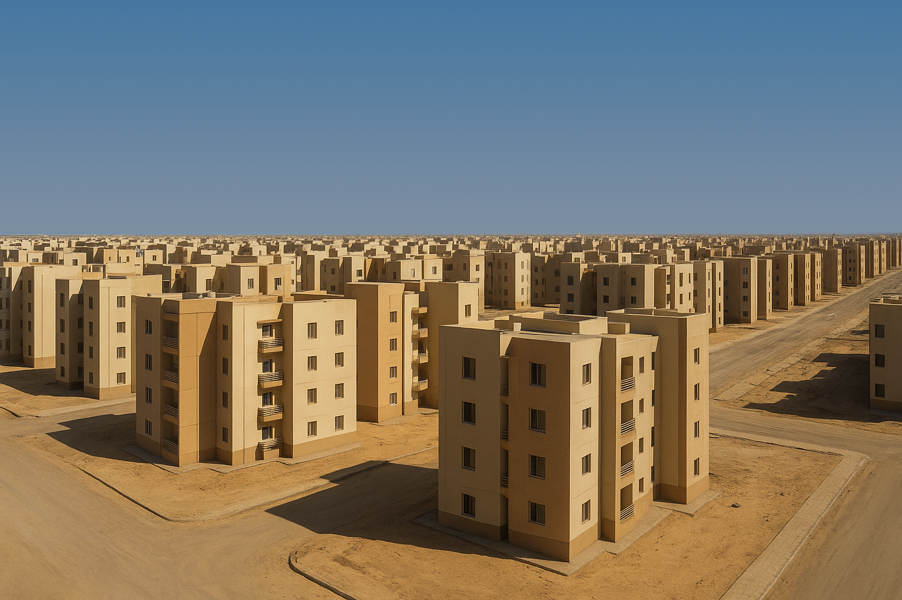
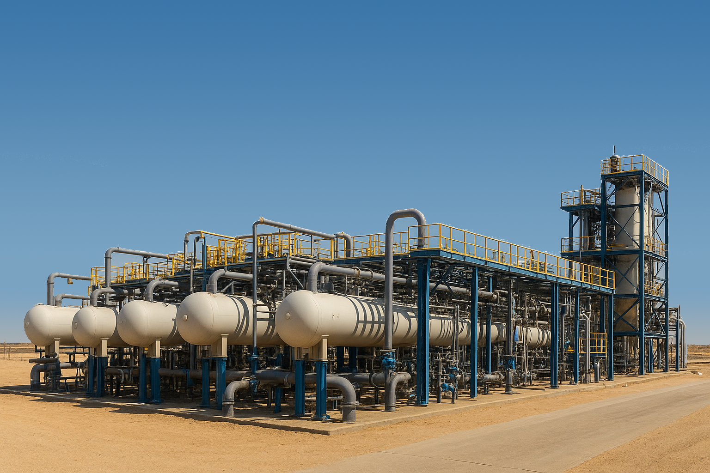
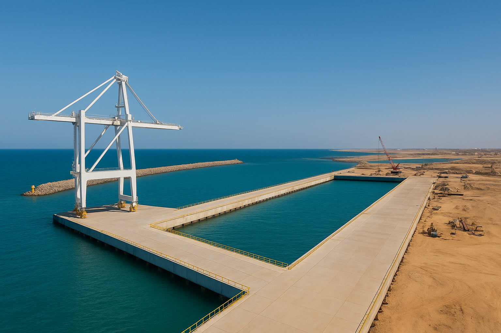
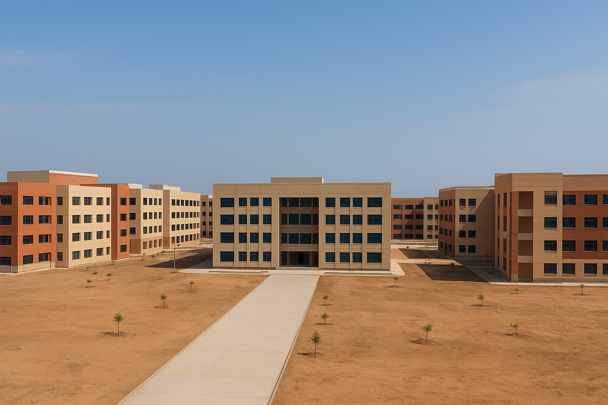
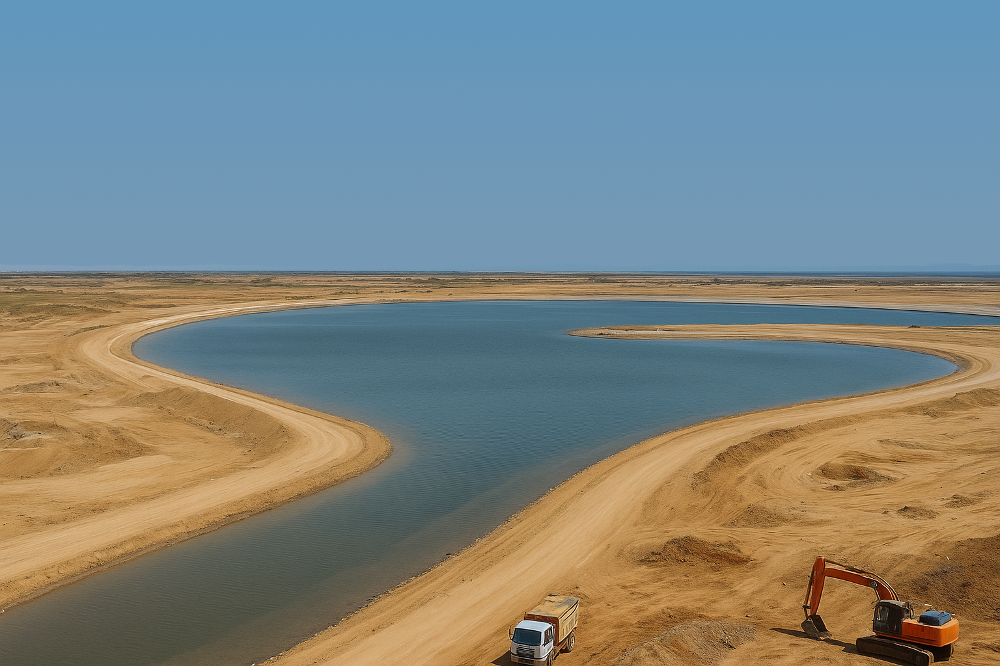
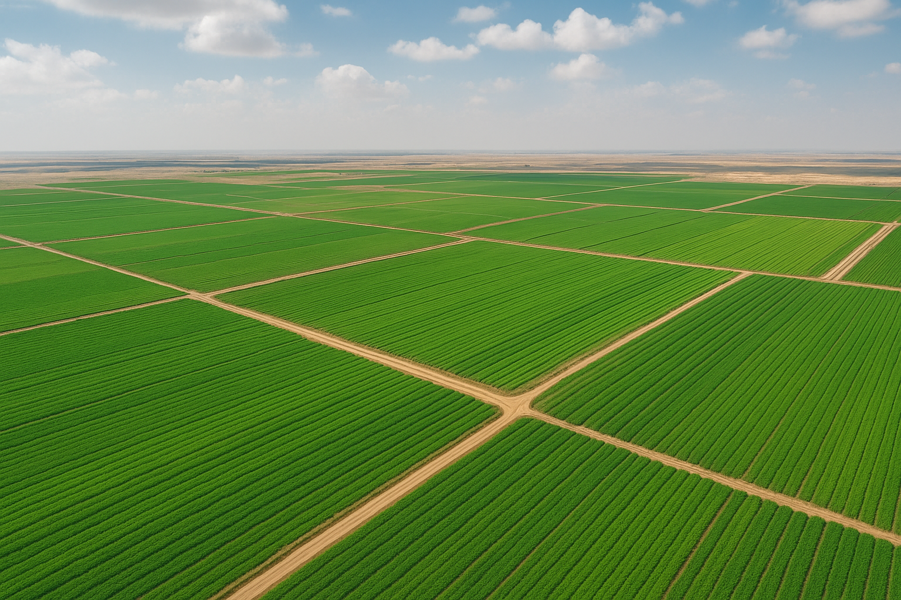
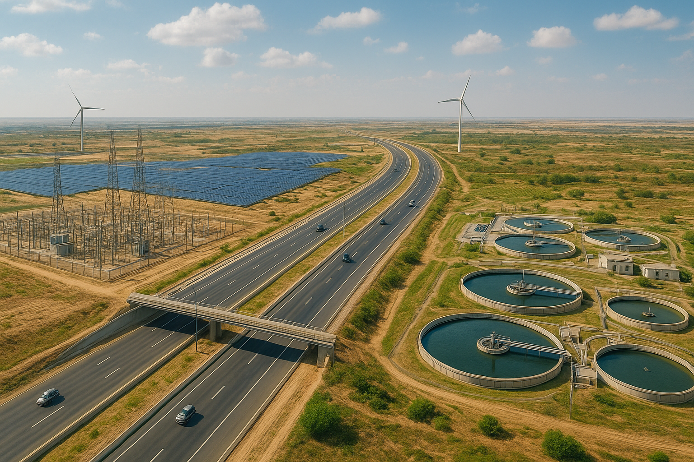

إنجازات محافظة شمال سيناء
أحــــــــدث الإنجــــــــــــــــازات

إنشاء 14 تجمعًا تنمويًا حضريًا
ينفذها الجهاز المركزي للتعمير لتسريع التنمية وتوفير الخدمات الأساسية في شمال سيناء.

محطة تحلية مياه "Skadra 2"
محطة بسعة 5,000 م³/يوم لتأمين احتياجات مياه مدينة الشيخ زويد والمناطق المجاورة.

تطوير ميناء العريش
بناء رصيف "تحيا مصر" بطول 915 مترًا ورصيف بحري سيناوي بطول 250 مترًا لتعزيز الحركة البحرية واللوجستية.

التوسع في جامعة العريش
إنشاء 11 كلية جديدة وزيادة الطاقة الاستيعابية للطلاب مع إدخال برامج دراسات عليا جديدة.

تطوير بحيرة البردويل
أعمال التطوير قيد التنفيذ (نحو 85% من المخطط) لتحسين جودة المياه وتوسيع نشاط الصيد المحلي.

مشروع استصلاح 109 آلاف فدان
منطقة زراعية كبرى ضمن خطط استصلاح الأراضي لزيادة الإنتاج الزراعي وتعزيز الأمن الغذائي.

مشروعات بنية تحتية وخدمات
سلسلة مشاريع في الطرق والكهرباء وتحسين البيئة والإنارة والوحدات المحلية لتعزيز جودة الخدمات العامة.